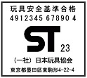

| <ＳＴマーク制度要綱 第4条6項 より> 標章「ＳＴ」の右横の数字は検査申請年（更新の場合にあっては、更新の検査を申請した年）を表すものとし、当該検査申請のあった年の西暦年号の下2桁の数字を用いる。 |
|
|  | 左のマークは、2023年1月1日からの申請時の表示例。 |
- 2023/06/29
- 日本規格協会にて基準書等のPDF販売を開始
日本規格協会（JSA）のホームページで、PDFダウンロード版の「玩具安全基準書」
（和文・英文）及び「玩具の使用開始最低年齢のガイドライン」の販売を行っています。
日本規格協会での販売価格は次のとおりです。
玩具安全基準書ST2016基準書（第4版） 和文 60,225円（税込） 英訳 66,000円（税込） 玩具の使用開始最低年齢のガイドライン 23,100円（税込）
購入方法は、日本規格協会のHP（こちら）でST2016等で検索してください。
- 2023/05/22
- 磁石製娯楽用品と吸水性合成樹脂製玩具の規制について
経産省から、「磁石製娯楽用品」と「吸水性合成樹脂製玩具」の規制（消費生活用製品安全法の「特定製品」指定）について、関係の皆様への周知依頼がありましたので、連絡させて頂きます。（経産省周知依頼事項）
消費生活用製品安全法の「特定製品」に「磁石製娯楽用品（マグネットセット）」「吸水性合成樹脂製玩具（水で膨らむボール）」の２品目を指定する消費生活用製品安全法施行令の改正政令が5月19日に公布され、6月19日に施行されることとなりました。
こちらの文書（磁石製娯楽用品及び吸水性合成樹脂製玩具の規制への協力依頼 ）に新たな規制に係る説明について記載しましたので、ご確認下さい。
）に新たな規制に係る説明について記載しましたので、ご確認下さい。１．消費生活用製品安全法の「特定製品」に指定された製品は、同法で定める技術基準（省令）に適合している旨のＰＳＣマークを 付していない場合、製造・輸入・販売ができなくなります。
２．「磁石製娯楽用品（マグネットセット）」と「吸水性合成樹脂製玩具（水で膨らむボール）」については、近年、乳幼児が これらの製品を誤飲することによる事故が相次いで発生していることから、消費生活用製品安全法の「特定製品」に指定することとなりました。■磁石製娯楽用品（磁石と他の磁石とを引き合わせることにより玩具その他の娯楽用品として使用するものであつて、これを構成する個々の磁石又は磁石を使用する部品が経済産業省令で定める大きさ以下のものに限る。） ■吸水性合成樹脂製玩具（吸水することにより膨潤する合成樹脂を使用した部分が吸水前において経済産業省令で定める大きさ以下のものに限る。） ※今後、乳幼児が飲み込みうる大きさとして、経済産業省令において、ISO8124-1に規定 されている小部品シリンダーに収まる大きさ以下のものと規定する予定。
３．いわゆる「マグネットセット」は、今後技術基準で定める予定の磁力を超えるものであるため、技術基準を満たさず、規制により製造、輸入及び販売ができなくなります。
いわゆる「水で膨らむボール」も、今後技術基準で定める予定の膨潤率を超えて膨張するため、技術基準を満たさず、規制により製造、輸入及び販売ができなくなります。
マグネットセットはおもちゃとしての販売以外にも「14 歳以上向けストレス解消」等の記載で販売されている場合がありますが、こうした子供向けではない製品についても、新たな規制の対象になり、販売できなくなります。４．磁石製娯楽用品と吸水性合成樹脂製玩具の技術基準等については、今後6月19日までに公布・施行する予定ですが、6 月18 日以前に製造又は輸入した製品を12月18日まで「〇PSCマーク」を付さずに販売することは可能です。
（参考1）経産省製品安全課が5月17日付Q&Aをウェブサイトで公表しました。
https://www.meti.go.jp/product_safety/consumer/pdf/202301517FAQ.pdf
「DIYの材料や模型等に使用されるホビー材料として販売されるネオジム磁石については、 …
今般の規制の対象外としており、これまでどおりの販売をしていただくことが可能です。」（参考2）5月19日の官報号外に消費生活用製品安全法施行令の一部を改正する政令が掲載（公布）されました。
https://www.meti.go.jp/policy/consumer/seian/shouan/contents/20230519_kaisei_seirei.pdf
- 2023/02/09
- 令和4年（2022年）の玩具売上分析セミナー開催のお知らせ
（募集終了しました）
日時：令和5年3月1日(水)14:00-15:00
※オンラインセミナーとなります（Zoomウェビナー）。
対象者：会員企業・玩具安全マーク使用許諾契約企業
定員：300名【先着順・事前申込要 定員になり次第、締切らせて頂きます】
参加費：無料
お申込み及び詳細は、こちら資料をご利用ください。